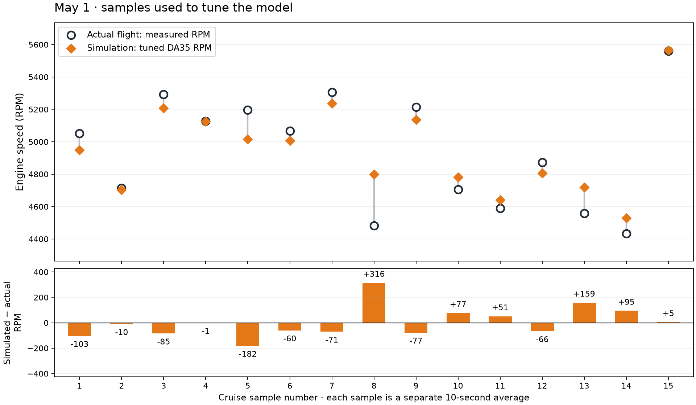
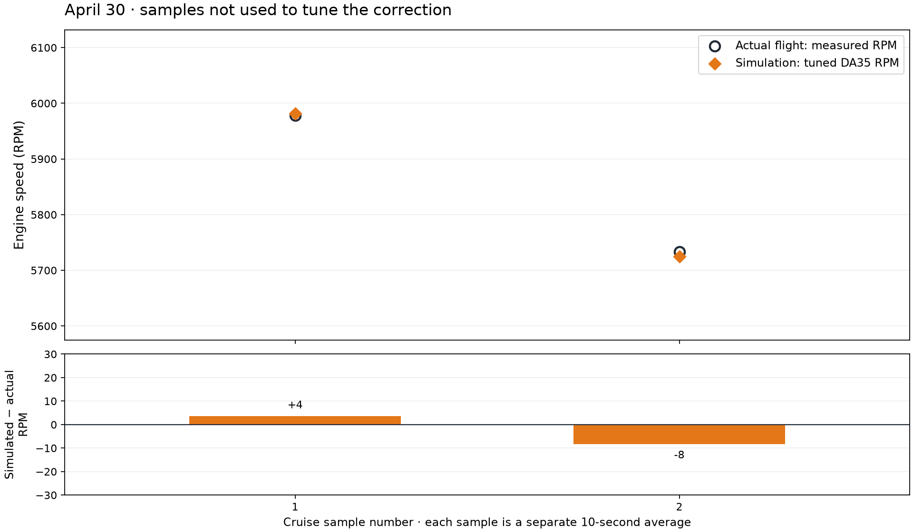
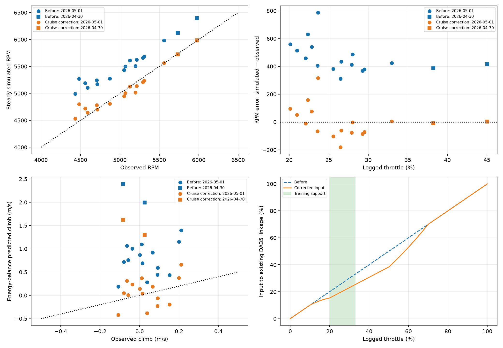
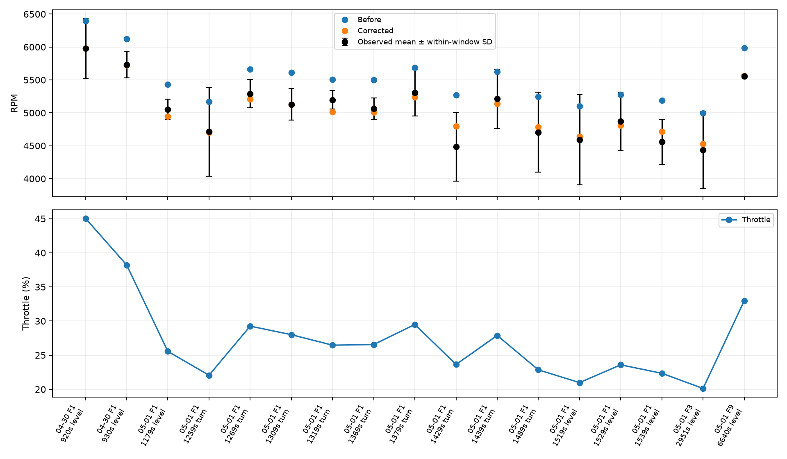

The tuned DA35 now tracks the measured cruise RPM closely in these selected samples.
○ Black circles = actual flight measurements. ◆ Orange diamonds = simulated RPM from the tuned DA35. The smaller the gap between the two markers, the closer the match.
Data
Samples
Mean absolute RPM error
RMS RPM error
May 1 · fitted samples
15
1.9%
119 RPM
April 30 · held-out samples
2
0.1%
6 RPM
Each point represents a separate 10-second cruise average. The simulation is evaluated at that sample's recorded throttle, true airspeed and air density. These are steady engine calculations—not a replay of the flight path. Sample numbers do not represent a continuous time axis.
1. Actual vs simulated: fitting samples
These May 1 samples were used to adjust the throttle response, so a good fit here is expected.

Top: compare the black circle with the orange diamond in each column. Bottom: zero means a perfect match; positive bars mean the simulation runs faster than the measurement.View the actual and simulated numbers for May 1
Sample
Flight
Log time (s)
Actual RPM
Simulated RPM
Difference (RPM)
1
1
1178.6
5052
4949
-103
2
1
1258.6
4714
4704
-10
3
1
1268.6
5291
5207
-85
4
1
1308.6
5127
5126
-1
5
1
1318.6
5197
5015
-182
6
1
1368.6
5067
5007
-60
7
1
1378.6
5307
5236
-71
8
1
1428.6
4483
4798
316
9
1
1438.6
5213
5136
-77
10
1
1488.6
4706
4782
77
11
1
1518.6
4590
4641
51
12
1
1528.6
4873
4807
-66
13
1
1538.6
4559
4718
159
14
3
2951.2
4434
4529
95
15
9
6639.8
5559
5564
5
2. Actual vs simulated: held-out samples
These April 30 samples were not used to fit the new correction. They check how it behaves on another flight day.

The markers nearly overlap. This is promising, but two samples are not enough to establish broad accuracy. The vertical scales differ from the May 1 chart; use the labeled RPM values.View the actual and simulated numbers for April 30
Sample
Flight
Log time (s)
Actual RPM
Simulated RPM
Difference (RPM)
1
1
919.9
5978
5982
4
2
1
929.9
5733
5725
-8
What this establishes: cruise RPM agreement improved. It does not establish accurate thrust, fuel use or takeoff performance. The held-out climb prediction still has roughly 1.5 m/s RMS error. All Tiguar profiles use the shared BIN-derived base; the cruise-tuned model now adds its approved 75% takeoff throttle limit.
3. Takeoff: actual flight vs simulated flight
These plots use the saved coupled ArduPilot/JSBSim run of the cruise-tuned DA35: runtime/da35_default75_validation. Each day shows its first recorded takeoff against the same simulated takeoff. The parameter-file hash is included in the provenance.
Black solid line = actual flight. Orange dashed line = simulated flight, without electric boost.
Time zero is independently detected when throttle reaches 20% and stays above it for one second during takeoff. We show five seconds before and 60 seconds after this event. This is throttle onset—not liftoff. Airspeed is EAS for both traces; simulated RPM comes from JSBSim truth on the shared simulation clock.
Different takeoff conditions: you recall approximately 20% electric assistance during takeoff/initial climb. The simulation has no boost. Actual logs show an initial flap command of 50; the simulated aircraft has no calibrated flap model. Wind, commands, targets and aircraft configuration can also differ. These overlays reveal differences; they do not isolate engine error or prove takeoff fidelity.
What to look for: compare the initial RPM rise and acceleration, then the rate of height gain. The pitch and throttle panels help explain when different controller commands contribute to separation. Once the simulation reaches its altitude target, it reduces throttle; later RPM differences also reflect that different flight path.
May 1: first recorded takeoff
Black solid = actual flight. Orange dashed = the same coupled simulated takeoff used for both date comparisons. Gray shading shows five seconds before throttle onset. Height is zeroed to each flight's pre-takeoff reference.May 1: climb rate, pitch and throttle
The throttle traces show why these are not identical-input tests. Recorded throttle represents the gasoline output channel; it does not measure electric assistance. The simulation controller can command a different throttle or pitch while flying its own mission.
April 30: first recorded takeoff
Black solid = actual flight. Orange dashed = the same coupled simulated takeoff used for both date comparisons. Gray shading shows five seconds before throttle onset. Height is zeroed to each flight's pre-takeoff reference.April 30: climb rate, pitch and throttle
The throttle traces show why these are not identical-input tests. Recorded throttle represents the gasoline output channel; it does not measure electric assistance. The simulation controller can command a different throttle or pitch while flying its own mission.
Takeoff timing, peak RPM and source data
Descriptive values over the displayed interval. A blank timing means the threshold was not reached within 60 seconds. Values include recorded transients; no curve shifts or smoothing were fitted to improve agreement.
Simulation: runtime/da35_default75_validation. Flight-controller states are extracted from the simulated BIN log using the same fields as the actual logs. RPM is joined from JSBSim truth within 30 ms, with no clock offset fitted.
Current default: 75% takeoff throttle, with cruise checks
tig_da35_cruise now applies TKOFF_THR_MAX=75 by default through config/models/tig_da35_cruise.parm. The shared BIN snapshot and the other model defaults retain their original takeoff setting. Explicit experimental parameter files override model defaults.
Takeoff is closer, but it does not reproduce the black actual-flight curve. The height, speed, RPM and command histories still differ. The actual aircraft used up to 100% gasoline throttle plus recalled electric assistance; the simulator uses a 75% cap as an empirical scenario adjustment.
Flight
Peak climb, first 30 s (m/s)
Mean takeoff climb at 10–80 m (m/s)
Seconds to +50 m
Peak RPM, first 60 s
Actual May 1
4.49
2.09
37.50
8247.00
New default: 75%
4.52
3.05
25.50
7958.54
Previous default
8.05
6.58
14.90
8233.76
Climb means use takeoff-stage samples between 10 and 80 m height, with different time windows for each flight. Time to +50 m is measured from throttle onset. No curves were shifted or scaled to improve agreement.
Does steady cruise still track?
Yes within the checked mission. Across five settled level-turn phases at 23/25 m/s and 100/130 m, the largest EAS RMSE is 0.036 m/s and largest height RMSE is 0.091 m. Values use the final 20 seconds of each phase.
The separate straight-level run checks the final 60 seconds of a 6 km waypoint leg: mean EAS 23.000 m/s, mean relative height 100.025 m, climb RMS 0.012 m/s, bank RMS 0.601°, RPM 4855 ± 13, throttle 25.7%. This tests simulated tracking, not a replay of the actual flight.
Does the engine still match recorded level-flight RPM?
The engine and its cruise calibration are unchanged. Below are the existing steady-model predictions restricted to the actual straight-and-level windows (turns excluded), evaluated at each window's recorded throttle, TAS and density. May 1 was used for fitting; April 30 is held out. These are cached engine calculations, separate from the coupled mission above.
Day
Samples
Partition
RPM RMSE
Mean absolute RPM error (%)
2026-04-30
2
Held out
6.37
0.10
2026-05-01
6
Fit
93.08
1.71
Only two held-out level windows are available. Good RPM agreement does not verify thrust or fuel consumption; the earlier held-out climb prediction error remains about 1.5 m/s RMS.
Before and after: settled cruise tracking by phase
Interactive launch: ./run_tiguar.sh --model tig_da35_cruise. Automated flight: python3 scripts/run_sitl.py --model tig_da35_cruise --name my_default75_run --profile --duration 620. The takeoff limit is applied automatically; no --param-file is required.
What changed in the model?
A single fitted factor (0.7666) reduces the input to the existing DA35 throttle linkage in the cruise region. Idle and high-throttle settings are preserved. This is an empirical adjustment, not a new horsepower specification. The experimental aircraft is tig_da35_cruise.
You recalled approximately 20% electric assistance during takeoff or initial climb. That is recorded separately from the manual's nominal 50% capability. Actual shaft assistance is not verified, and no boost has been added to this gasoline-only cruise model.
Before vs after tuning, climb estimates, and throttle mapping
These are supporting diagnostics. Blue = original DA35 simulation; orange = tuned DA35 simulation. Circles identify May 1 and squares April 30. The black diagonal in the RPM panel means simulated equals actual; zero in the error panel means no RPM difference.

date
partition
model
windows
rpm_rmse
rpm_bias
rpm_mape_pct
rpm_max_error_pct
climb_rmse_mps
2026-04-30
held_out
tig_da35
2
403.51
403.26
6.88
6.98
2.24
2026-04-30
held_out
tig_da35_cruise
2
6.37
-2.33
0.10
0.14
1.50
2026-05-01
fit
tig_da35
15
486.87
472.67
9.73
17.56
0.80
2026-05-01
fit
tig_da35_cruise
15
118.99
3.13
1.88
7.04
0.28
Training RPM RMSE changes from 487 to 119; held-out RPM RMSE changes from 404 to 6. The correction improves both day-level scores, but two held-out windows cannot establish broad accuracy. Climb estimates use the existing drag model with recorded acceleration and bank; they are not full-flight simulations.
Sample selection and measurement variation
Existing quality-filtered, nonoverlapping windows are restricted to level flight or steady turns, 21–25 m/s EAS, valid propeller advance ratio, at least 60 seconds after flight detection, and continuously normal flight stage. Climb and descent windows are excluded. No boost telemetry is available to independently verify boost-off.
15 fitting windows across 3 flights; 2 held-out windows across 1 flight(s). Fitting throttle range: 20.1–33.0%. Held-out throttle: 38.2–45.0%, outside the fitting range. Actual EAS range: 22.68–24.15 m/s.

Error bars show within-window variation, not confidence intervals. Earlier model priors and the fleet spreadsheet are not fully independent of these logs. The correction trades some fleet-average agreement for closer agreement with these particular flights.
Coupled flight-test results and reproducibility
The coupled run checks that the aircraft can track commanded speed and altitude. It is a separate mission, not a match to the real flight path.